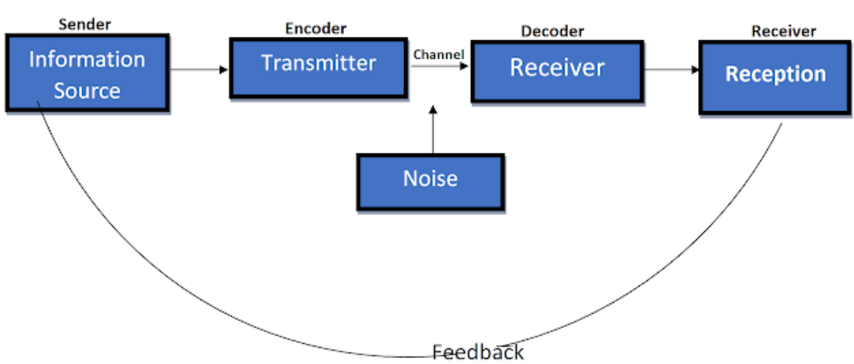

Chapter: 2 Communication and Etiquette
Communication is important for knowledge transmission. It is essential to know how to communicate well (and politely) especially in the domain of knowledge development. Besides having the know-hows on data management, being able to communicate your questions and findings to others clearly is equally important. This is why you should take time to craft your emails and other communications carefully.
2.1 Overview
This chapter will cover examples and guidelines for emailing and communicating with me or other colleagues for work purposes. While there is no hierarchy per se, I would appreciate if you understand that most of the communications here are task-oriented rather than for leisure purposes.
Hence, please communicate in a way that demonstrates professionalism. It should be clear that something such as, “5pm, onz?”, is overly-casual for a meeting confirmation without much thoughtful content (e.g., location to meet). Instead, something such as, “Hey Ben, would it be okay to having a quick chat at 5pm later on Zoom?” would be much preferred.
2.2 Scheduling
If you are looking to schedule an appointment with me, I would try to respond within 12 hours to acknowledge and to confirm whether I can make it for the stipulated time. If you do not receive anything after 12 hours, then it is likely I have missed your message.
In this case, please send me a reminder. In the event that I also missed the reminder (which rarely happens), please send me a reminder again. I will address them as soon as I can.
Unless otherwise stated, all members should try to respond within 12 hours as well to facilitate the progress in each research projects.
2.3 Email Etiquette
When drafting an email, Please take note of the following:

Shannon & Weaver Model of Communication
Audience: Are you addressing it to only me or are those being CC-ed also required to attend to the information? When possible, make it explicit on who should be responding to your emails. Sometimes, individuals who are CC-ed might think that the email is only for information and might not act on them unless stated in the email. Hence, it is helpful to be direct and state what you need from them (e.g., Could Alex provide more information on this dataset?).
Purpose: What is the purpose of this email? To inform, to clarify information, to deliver outputs, or to seek resources? Always send an email with context to reduce incorrect interpretation. It is always better to over-describe than to under-describe the context. It also helps to be succinct and clear.
Attachments: Please ensure that your attachments are working. You can test this by accessing your link with a separate browser before sending the email. This would reduce the amount of back-and-forth emailing due to dead links.
Have a Signature:
- Put your name, your title, and link to your website or repo if you have any. This helps to create a professional image as well.
When responding to emails:
Use your professional account if possible (e.g., your NUS account).
- Since most of the correspondence via email will be work-related, pick one that you check regularly. We want to avoid the situation of, “sorry I didnt check my account XX for a long time as that is my other account”. This creates additional hassles to projects.
When possible, respond to your emails even if its simply saying, I acknowledge. This lets the sender know that their emails have been received.
Respond with complete thoughts and with contextual information whenever possible. This will greatly help your receiver understand what you want to convey.
2.4 Other Text Communications Tools
We might make use of other platforms such as Whatsapp and Slack besides email if its to confirm something simple. Although it is reasonable to be a bit more casual on these platform, it is still important to be respectful and to have some levels of formality.
Slack. In case you are unfamiliar with slack, you can refer to the following links for some ideas on what it is and how to use it.
Whatsapp. Whatsapp should be something that is familiar for everyone. But just in case you are unfamiliar, here are some resources as well.
Asana